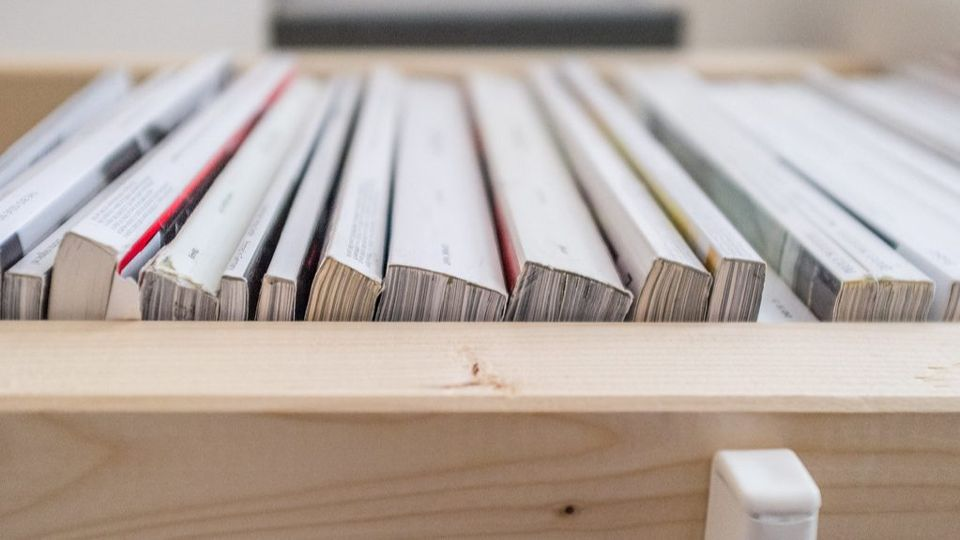
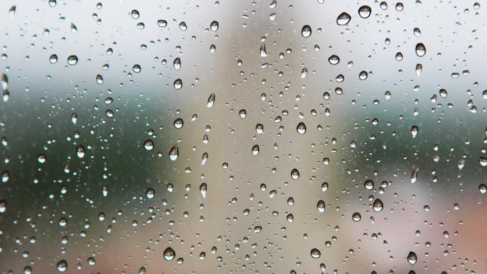
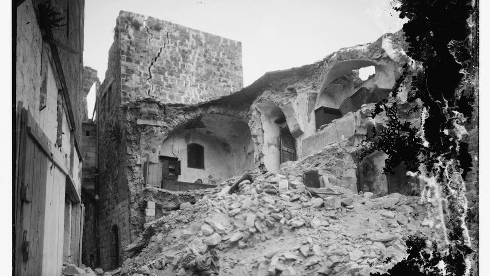
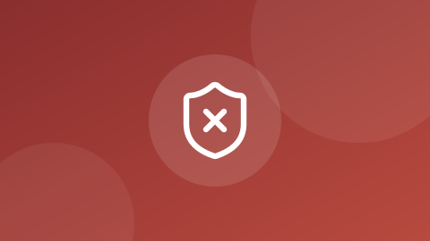

Kit d'urgence 72 h : tous nos guides
Se préparer chez soi, d'après le guide officiel « Tous responsables » : par où commencer, quoi adapter à votre foyer, et que faire selon chaque risque. Chaque guide est court, sourcé et gratuit.

Le kit d'urgence 72 h
L'eau, les repas sans cuisson, la liste à cocher, le sac à emporter, le guide officiel et un kit à petit prix.
 Kit de survie 72 h : la listeListe complète du kit d’urgence 72h du gouvernement : eau, nourriture, radio, trousse… Version claire +…
Kit de survie 72 h : la listeListe complète du kit d’urgence 72h du gouvernement : eau, nourriture, radio, trousse… Version claire +…
 Que mettre dans un kit d'urgenceQue mettre dans un kit d’urgence pour tenir 72 heures : eau, nourriture, lumière, radio, soins, papiers.
Que mettre dans un kit d'urgenceQue mettre dans un kit d’urgence pour tenir 72 heures : eau, nourriture, lumière, radio, soins, papiers.
 Aliments sans cuissonQue manger pendant 3 jours sans électricité ni gaz ?
Aliments sans cuissonQue manger pendant 3 jours sans électricité ni gaz ? Un kit pas cherComment constituer un vrai kit d’urgence 72h à moindre coût avec ce que vous avez déjà.Tenir 7 joursLa stratégie UE de mars 2025 recommande 72 h d'autonomie.
Un kit pas cherComment constituer un vrai kit d’urgence 72h à moindre coût avec ce que vous avez déjà.Tenir 7 joursLa stratégie UE de mars 2025 recommande 72 h d'autonomie. Le guide officiel en PDFOù télécharger le PDF officiel du guide « Tous responsables » (kit d'urgence 72h), ce qu'il contient, et une…
Le guide officiel en PDFOù télécharger le PDF officiel du guide « Tous responsables » (kit d'urgence 72h), ce qu'il contient, et une…Réagir en cas de crise
Les bons réflexes pour chaque situation, dans l'ordre : avant, pendant, après. Pour les risques de votre commune : georisques.gouv.fr.
 Le signal d'alerte (sirène)Reconnaître le signal national d'alerte : son modulé, durée, essai mensuel le 1er mercredi à midi, signal de…
Le signal d'alerte (sirène)Reconnaître le signal national d'alerte : son modulé, durée, essai mensuel le 1er mercredi à midi, signal de…



 Feu de forêtObligation légale de débroussaillement, réflexes si un feu de forêt approche et mise à l'abri dans un…
Feu de forêtObligation légale de débroussaillement, réflexes si un feu de forêt approche et mise à l'abri dans un…

 CycloneComprendre les niveaux d'alerte cyclonique Météo-France en outre-mer, préparer sa maison avant l'arrivée du…
CycloneComprendre les niveaux d'alerte cyclonique Météo-France en outre-mer, préparer sa maison avant l'arrivée du…


Protéger son foyer
Adapter la préparation à votre famille, aux enfants, aux personnes fragiles, aux animaux, au logement et à la voiture.


 Une personne âgéePréparer l'autonomie 72 h d'une personne âgée : traitements, ordonnances, registre communal du CCAS…
Une personne âgéePréparer l'autonomie 72 h d'une personne âgée : traitements, ordonnances, registre communal du CCAS… HandicapPréparer une crise de 72 h en situation de handicap : numéro d'urgence 114 (SMS, visio, appli), matériel…
HandicapPréparer une crise de 72 h en situation de handicap : numéro d'urgence 114 (SMS, visio, appli), matériel…

 Plan familial de mise en sûretéOrganiser son plan familial de mise en sûreté : qui fait quoi, point de rendez-vous, contacts utiles et…
Plan familial de mise en sûretéOrganiser son plan familial de mise en sûreté : qui fait quoi, point de rendez-vous, contacts utiles et…S'équiper intelligemment
Radio, lampes, piles, trousse, batteries, eau potable, détecteur de fumée : des critères de choix neutres, sans marques.

 Les pilesAlcalines ou lithium ? Combien en stocker ? Comment les conserver et les faire tourner dans un kit d'urgence…
Les pilesAlcalines ou lithium ? Combien en stocker ? Comment les conserver et les faire tourner dans un kit d'urgence… Batterie et station électriqueComprendre les mAh et les Wh d'une batterie externe, choisir la capacité utile et éviter les risques de…
Batterie et station électriqueComprendre les mAh et les Wh d'une batterie externe, choisir la capacité utile et éviter les risques de…
 Couverture de survieÀ quoi sert vraiment une couverture de survie ?
Couverture de survieÀ quoi sert vraiment une couverture de survie ? Détecteur de fuméeLe détecteur avertisseur autonome de fumée (DAAF) est obligatoire dans chaque logement depuis 2015.
Détecteur de fuméeLe détecteur avertisseur autonome de fumée (DAAF) est obligatoire dans chaque logement depuis 2015. Trousse de secoursContenu de base d'une trousse de secours pour le kit 72 h, et pourquoi se former aux gestes qui sauvent (GQS…
Trousse de secoursContenu de base d'une trousse de secours pour le kit 72 h, et pourquoi se former aux gestes qui sauvent (GQS… Purifier l'eauÉbullition, pastilles de chlore ou filtre : ce qui marche contre les bactéries, les virus et les parasites.Groupe électrogèneUtiliser un groupe électrogène sans risque d'intoxication au monoxyde de carbone : installation en extérieur…
Purifier l'eauÉbullition, pastilles de chlore ou filtre : ce qui marche contre les bactéries, les virus et les parasites.Groupe électrogèneUtiliser un groupe électrogène sans risque d'intoxication au monoxyde de carbone : installation en extérieur… Frigo et congélateurFrigo fermé : environ 4 h. Congélateur plein : environ 48 h, à moitié plein : 24 h. Les bons gestes pendant…
Frigo et congélateurFrigo fermé : environ 4 h. Congélateur plein : environ 48 h, à moitié plein : 24 h. Les bons gestes pendant…Anticiper et s'entraider
Faire le point sur sa préparation, s'organiser en famille et avec ses voisins.
 Test : suis-je prêt ?10 questions pour savoir si votre foyer est prêt à tenir 72 heures : eau, nourriture, santé, papiers, alerte.
Test : suis-je prêt ?10 questions pour savoir si votre foyer est prêt à tenir 72 heures : eau, nourriture, santé, papiers, alerte. Entraide entre voisinsComment créer un réseau d’entraide de voisinage avant une crise.
Entraide entre voisinsComment créer un réseau d’entraide de voisinage avant une crise.
Arnaques au « kit gratuit »Faux « kit gratuit du gouvernement » par SMS ou site trompeur : comment vérifier et où signaler (33700…Préparation outre-mer
Cyclones, séismes, volcans : ce qui change dans le kit selon votre territoire.


 GuyaneKit d'urgence 72 h en Guyane : fortes pluies, inondations, coupures d'eau et d'électricité.La RéunionKit 72 h à La Réunion : saison cyclonique de novembre à avril, Piton de la Fournaise, séismes, inondations.
GuyaneKit d'urgence 72 h en Guyane : fortes pluies, inondations, coupures d'eau et d'électricité.La RéunionKit 72 h à La Réunion : saison cyclonique de novembre à avril, Piton de la Fournaise, séismes, inondations.
 Saint-Martin et Saint-BarthélemyKit d'urgence 72 h pour Saint-Martin et Saint-Barthélemy : cyclones violents (Irma 2017), séismes, tsunamis…
Saint-Martin et Saint-BarthélemyKit d'urgence 72 h pour Saint-Martin et Saint-Barthélemy : cyclones violents (Irma 2017), séismes, tsunamis…Comprendre et s'informer
Les principaux points du guide officiel, les questions fréquentes, le glossaire, les sources publiques citées et la méthode de rédaction.

 Glossaire30 termes de la préparation aux crises expliqués simplement : 112, FR-Alert, DICRIM, PPMS, délestage, iode…
Glossaire30 termes de la préparation aux crises expliqués simplement : 112, FR-Alert, DICRIM, PPMS, délestage, iode… Sources et méthodeToutes les sources officielles utilisées par Tous prêts (SGDSN, info.gouv.fr, Géorisques…).Charte éditorialeComment Tous prêts rédige et vérifie ses guides : sources officielles, dates de mise à jour, consignes…Aide sur l'applicationInstaller Tous prêts, l\'utiliser hors ligne, mettre à jour et protéger vos données.
Sources et méthodeToutes les sources officielles utilisées par Tous prêts (SGDSN, info.gouv.fr, Géorisques…).Charte éditorialeComment Tous prêts rédige et vérifie ses guides : sources officielles, dates de mise à jour, consignes…Aide sur l'applicationInstaller Tous prêts, l\'utiliser hors ligne, mettre à jour et protéger vos données. Pourquoi cette appliTous prêts transforme le guide officiel « Tous responsables » en checklist interactive.
Pourquoi cette appliTous prêts transforme le guide officiel « Tous responsables » en checklist interactive. Droits d'auteurCe que vous pouvez partager, ce qui demande une autorisation, et comment nous contacter.
Droits d'auteurCe que vous pouvez partager, ce qui demande une autorisation, et comment nous contacter.Informations pratiques, sources officielles (guide « Tous responsables » (SGDSN, 2025) et sites officiels). Elles ne remplacent pas les consignes des autorités. En cas d'urgence, appelez le 112 et suivez les consignes de la préfecture, de la radio et de FR-Alert.
Questions fréquentes
Par où commencer pour préparer son kit d'urgence ?
Commencez par l'eau (6 litres par personne), puis la nourriture sans cuisson, la radio à piles, la lampe et les médicaments. La checklist permet de cocher au fur et à mesure.
Ces guides sont-ils officiels ?
Non. Tous prêts est une initiative citoyenne indépendante qui s'appuie sur le guide officiel « Tous responsables » et cite ses sources. Les consignes des autorités font toujours foi.
Les guides fonctionnent-ils hors ligne ?
Oui, une fois l'appli ouverte, les pages consultées restent disponibles sans connexion.